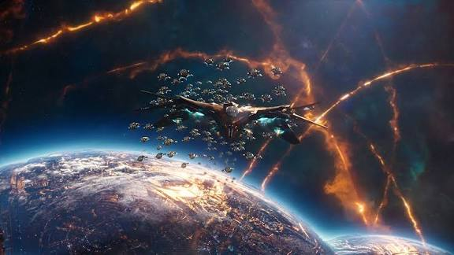

K-CLUSTER GALAXY
Remote dwarf-spiral used by the Kree as a weapons-testing graveyard. The site of the "Galactic Storm" crossover where Avengers once tried (and failed) to keep the Kree and Shi'ar from going to full war.
GALAXIES